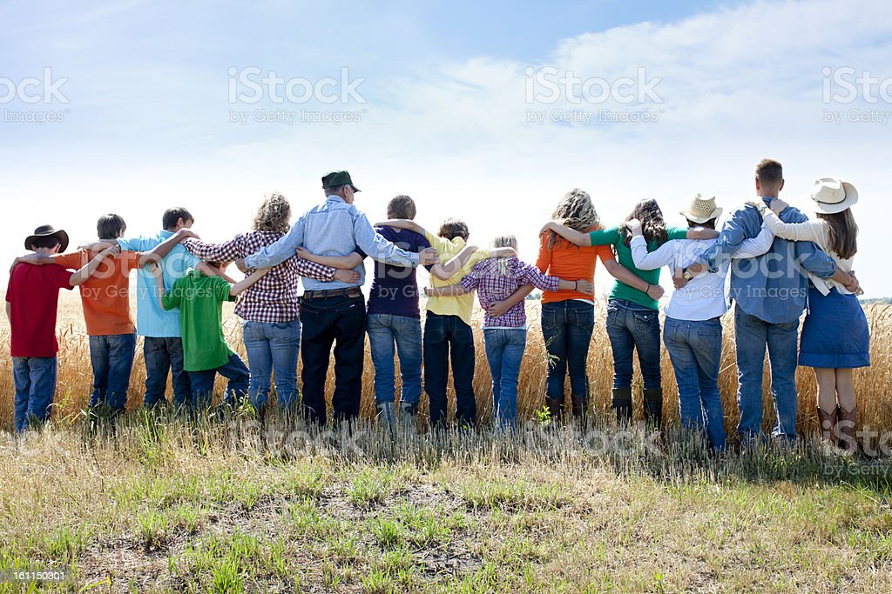

About Us
Green Fields Organic Farm is a family-run business located in the countryside of rural Clearwater, FL. The farm specializes in growing a variety of organic fruits and vegetables, using sustainable farming practices.
Our Mission
Our mission is to provide high-quality, healthy food to our community while promoting sustainable and responsible farming practices. We believe that by working in harmony with nature, we can create a better future for ourselves and our planet.
Our History
Green Fields Organic Farm has been in operation for over 50 years. Started by Greg's grandparents, the farm has been passed down through the family for generations. Today, Greg and his team continue the legacy of their ancestors by using sustainable farming practices to grow healthy, organic food for their community.
Our Team
At Green Fields Organic Farm, our team is like family. We are a group of passionate and dedicated individuals who share a love for organic farming and sustainable living. Meet our team and learn more about who we are.